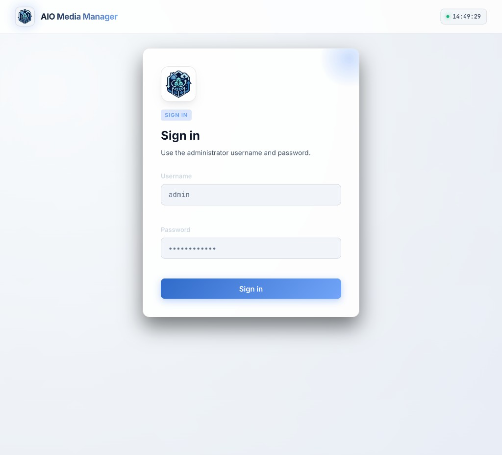
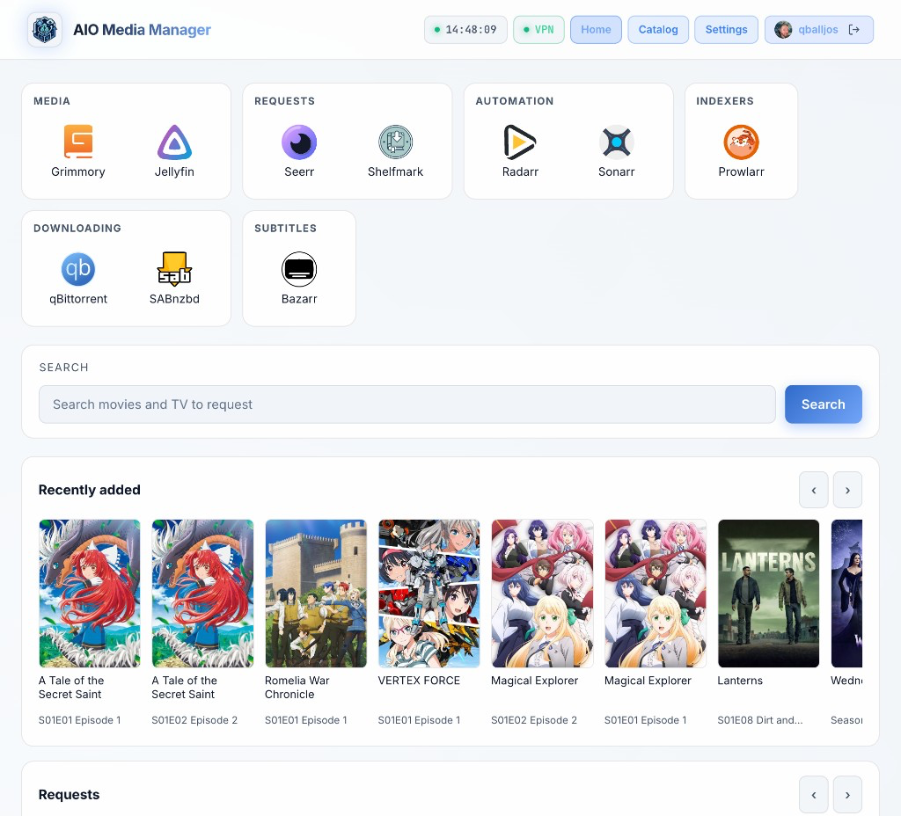
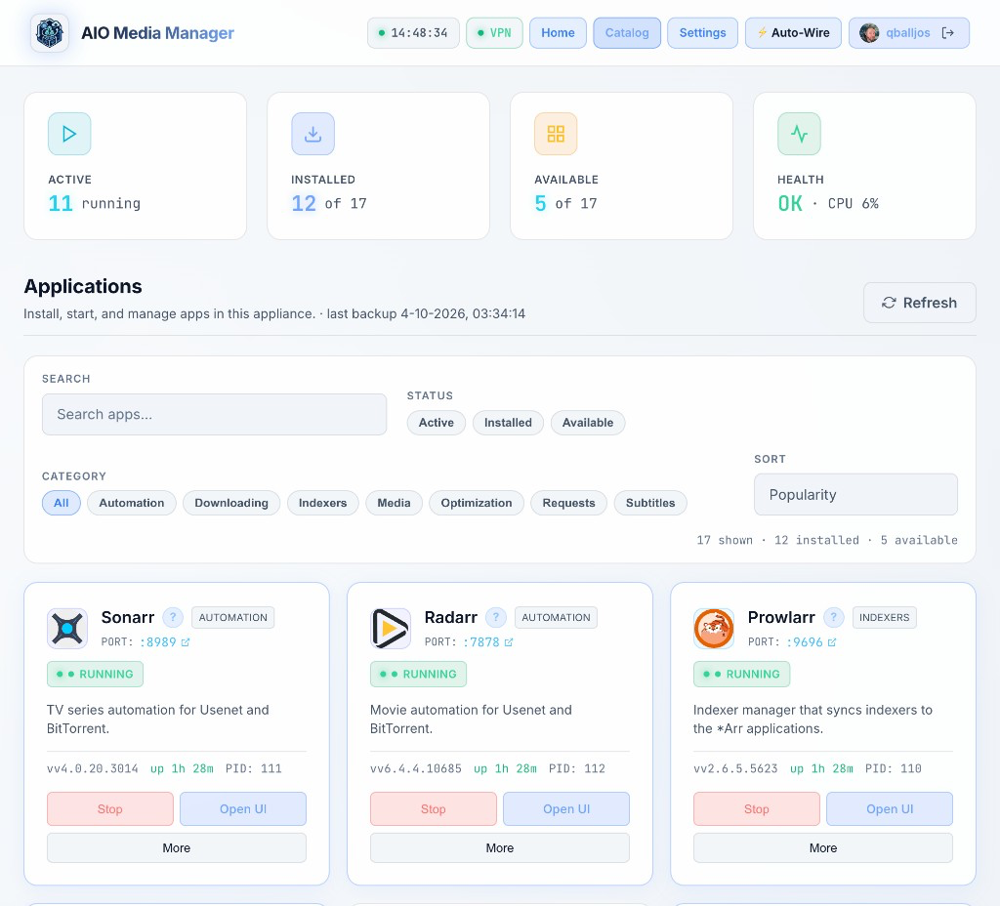
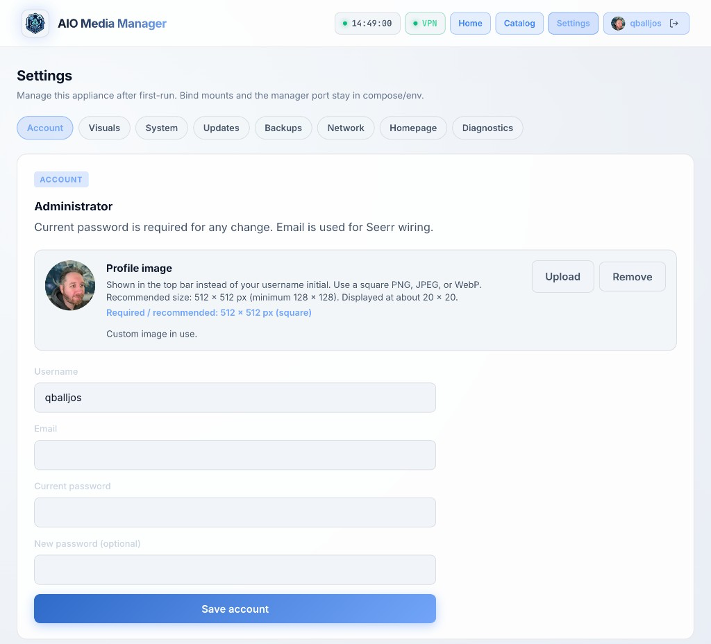

AIO Media Server Manager
Your whole media stack. One install.¶
Downloads, *Arr apps, and streaming — supervised from a single dashboard. No Compose file full of Sonarr, Radarr, and qBittorrent containers.




Start where you are¶
-
New here
Create folders, start the container, open the UI.
-
Already running
Enable apps, open each web UI, wire libraries.
-
Docker host
The usual path for NAS boxes and Linux servers.
-
Away from home
HTTPS via Cloudflare Tunnel, then a login gate with Access.
Pick your platform¶
-
Unraid
One Community Applications–style container.
-
Synology
One Container Manager project.
-
TrueNAS
One custom app on SCALE.
-
Linux / LXC
Native install without Docker.
What you get¶
-
One dashboard
Status, start/stop, and Open UI for every app you enable.
-
Automation + libraries
Sonarr, Radarr, Lidarr, and Bazarr — when you want them.
-
Downloads
Torrents and Usenet clients, optional VPN on the download path.
-
Watch & request
Jellyfin, Plex, and Seerr — same appliance.
The one rule: one AIO install = one container (or one native service).
Do not add separate Sonarr/Radarr/qBittorrent containers next to it.
Vibe coded¶
Yes — this app was vibe coded.
It was built with AI pair-programming in Cursor, steered by a human who wanted a full media stack without babysitting twelve containers. That is intentional, not a secret.
If something is rough around the edges, open an issue or a PR. The vibes improve with feedback.
Image¶
ghcr.io/qballjos/aio-media-server-manager:latest
Works on linux/amd64 and linux/arm64. After a pull, recreate the container so new ports and runtimes apply.